POSCOMP: Computação Gráfica e Processamento de Imagens, com respostas
105 questões do POSCOMP de 2002 a 2026: 51 de Computação Gráfica, 8 de matemática que cai em CG (vetor normal, produto vetorial, rotação, reflexão; ficam nas seções de Matemática da prova) e 46 de Processamento de Imagens (o banco do professor também usa as de imagens). Gabarito oficial de cada ano; "anulada" quando a SBC anulou a questão. As de Computação Gráfica e de matemática têm explicação; as de Processamento de Imagens têm só o gabarito. Fonte: cadernos e gabaritos do repositório amimaro/Provas-POSCOMP (cópias dos arquivos da SBC).
Computação Gráfica
P01 · POSCOMP 2002, questão 53
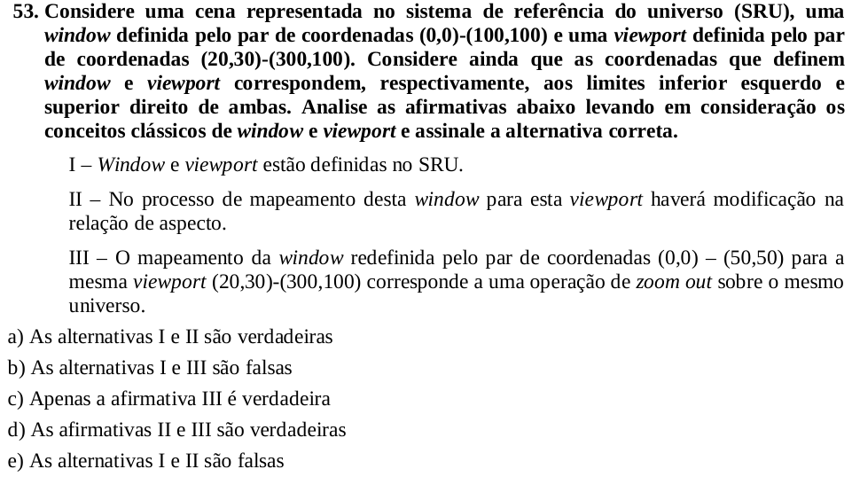
Resposta: B
Por quê: I é falsa: a window está no mundo (SRU) e a viewport no dispositivo. II é verdadeira: window 100×100 (1:1) e viewport 280×70 (4:1), muda a relação de aspecto. III é falsa: window menor (50×50) na mesma viewport é zoom in. Logo I e III falsas.
P02 · POSCOMP 2003, questão 49
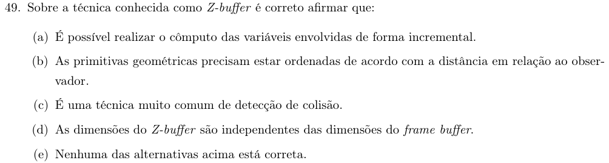
Resposta: A
Por quê: O z de cada pixel sai incrementalmente durante a varredura. O z-buffer não exige ordenar primitivas, não é detecção de colisão e tem o tamanho do frame buffer.
P03 · POSCOMP 2003, questão 50
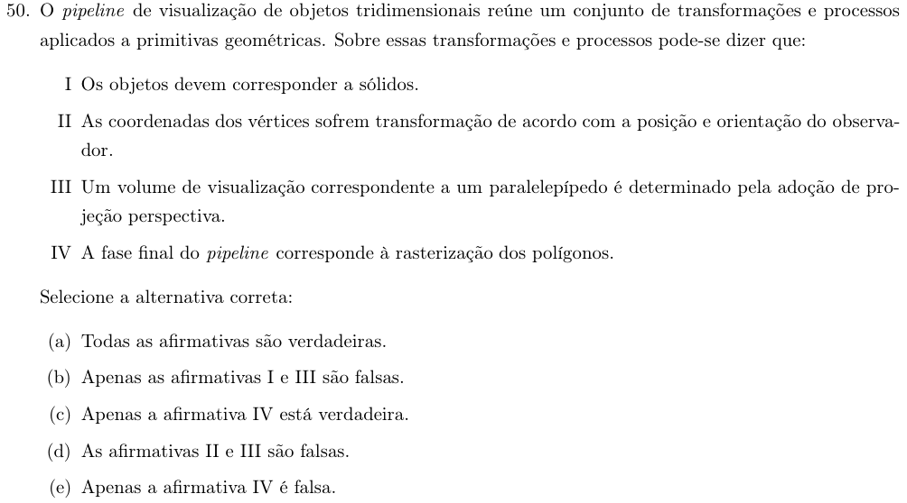
Resposta: B
Por quê: I falsa (o pipeline trabalha com primitivas, não exige sólidos). II verdadeira (transformação de câmera). III falsa (paralelepípedo é o volume da projeção paralela; a perspectiva dá tronco de pirâmide). IV verdadeira (rasterização no fim).
P04 · POSCOMP 2003, questão 51
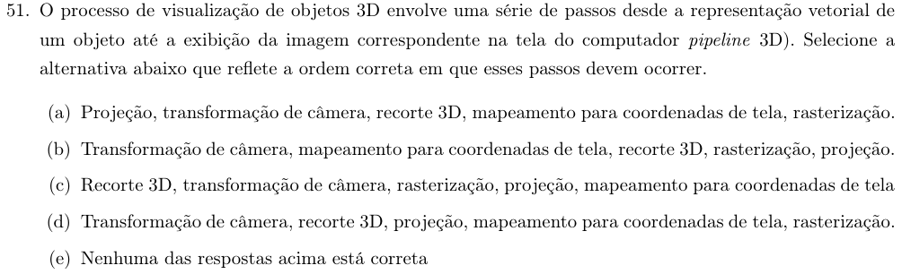
Resposta: D
Por quê: Câmera → recorte 3D → projeção → mapeamento para a tela → rasterização.
P05 · POSCOMP 2004, questão 57
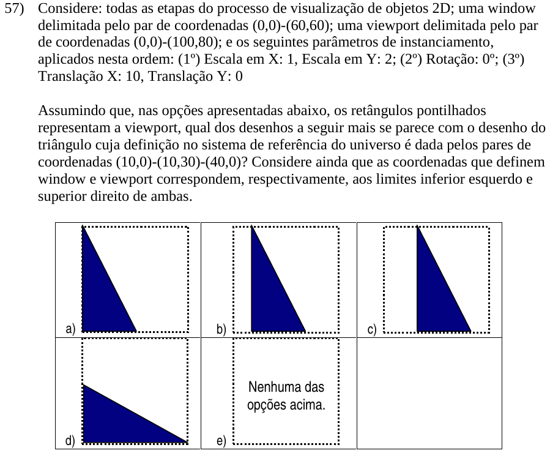
Resposta: C
Por quê: Escala (1,2) e translação (10,0): o triângulo (10,0)-(10,30)-(40,0) vira (20,0)-(20,60)-(50,0). Na window 0..60 o lado vertical fica a 1/3 da largura, do chão ao topo; o outro vértice a 5/6, embaixo: desenho c.
P06 · POSCOMP 2004, questão 59
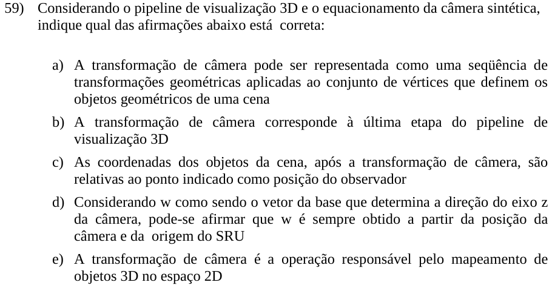
Resposta: A
Por quê: A transformação de câmera é uma sequência de transformações geométricas (translações e rotações) aplicada aos vértices. Ela não leva para 2D, não é a última etapa, e o eixo w da câmera vem da direção de visada.
P07 · POSCOMP 2004, questão 60
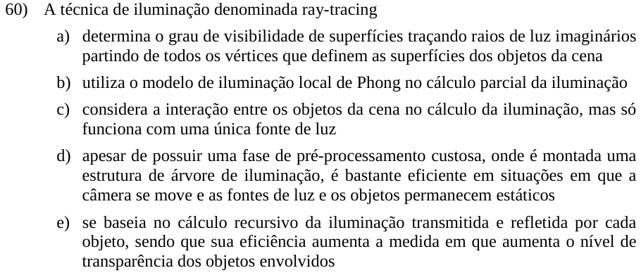
Resposta: B
Por quê: Ray tracing usa um modelo local (Phong) para a luz direta em cada ponto atingido e soma reflexão e refração recursivamente. Não tem árvore de iluminação pré-calculada, os raios saem do observador, fica mais lento com transparência e aceita várias luzes.
P08 · POSCOMP 2005, questão 46
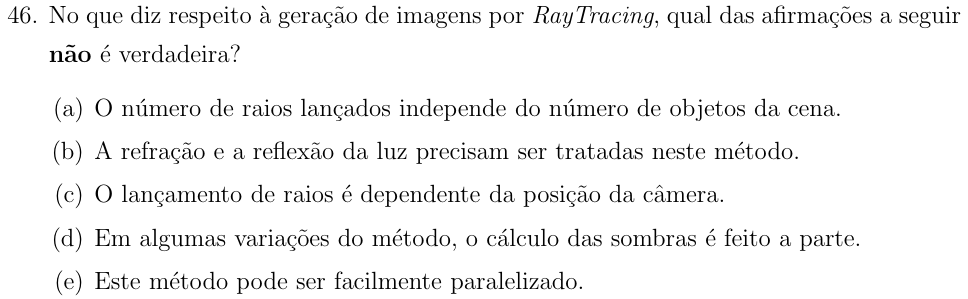
Resposta: A
Por quê: Falsa: o número de raios depende sim da cena (objetos refletores/transparentes e luzes geram raios secundários e de sombra). O resto é verdade: depende da câmera, trata reflexão e refração, a sombra pode ser à parte, e paraleliza fácil.
P09 · POSCOMP 2005, questão 56
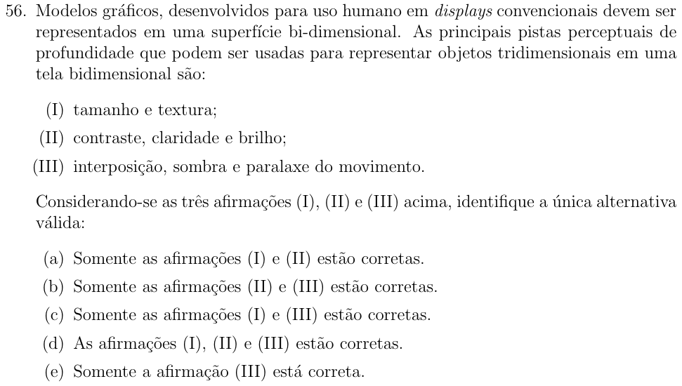
Resposta: D
Por quê: Gabarito: as três estão corretas. Tamanho e textura (gradiente de textura), contraste/claridade/brilho (perspectiva atmosférica) e interposição, sombra e paralaxe de movimento são todas pistas de profundidade.
P10 · POSCOMP 2006, questão 49
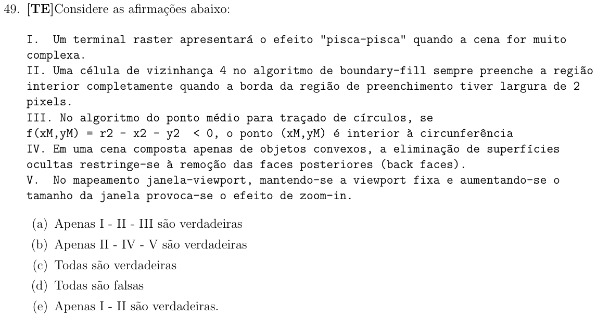
Resposta: D
Por quê: I: pisca-pisca com cena complexa é do display vetorial, não do raster. II: vizinhança 4 não passa por ligações diagonais. III: f = r² − x² − y² < 0 quer dizer ponto FORA. IV: vários convexos ainda se escondem, backface não basta. V: aumentar a janela é zoom out. Todas falsas.
P11 · POSCOMP 2006, questão 50
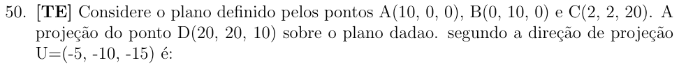
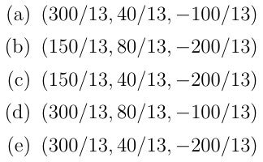
Resposta: C
Por quê: Normal do plano: (B − A) × (C − A) ∝ (10,10,3), plano 10x + 10y + 3z = 100. D + tU = (20 − 5t, 20 − 10t, 10 − 15t) cai no plano em t = 22/13 → (150/13, 40/13, −200/13).
P12 · POSCOMP 2007, questão 49
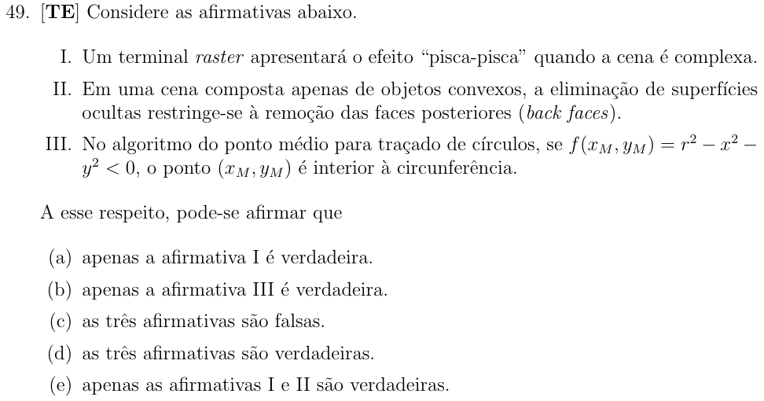
Resposta: C
Por quê: Mesmas afirmações do POSCOMP 2006: I é falsa (pisca-pisca é do vetorial), II é falsa (vários objetos convexos ainda se escondem), III é falsa (com f = r² − x² − y², f < 0 é fora). As três são falsas.
P13 · POSCOMP 2007, questão 50
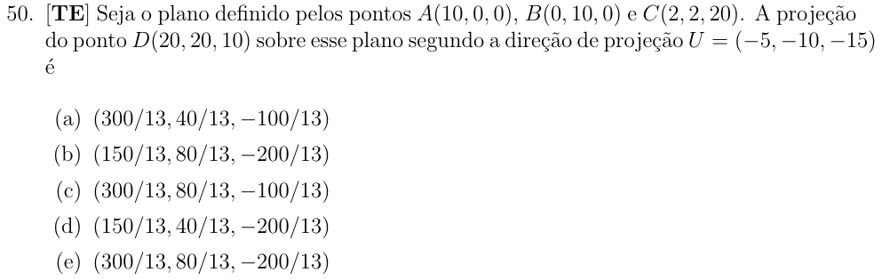
Resposta: D
Por quê: Mesma conta do POSCOMP 2006: plano 10x + 10y + 3z = 100, t = 22/13, ponto (150/13, 40/13, −200/13).
P14 · POSCOMP 2007, questão 51
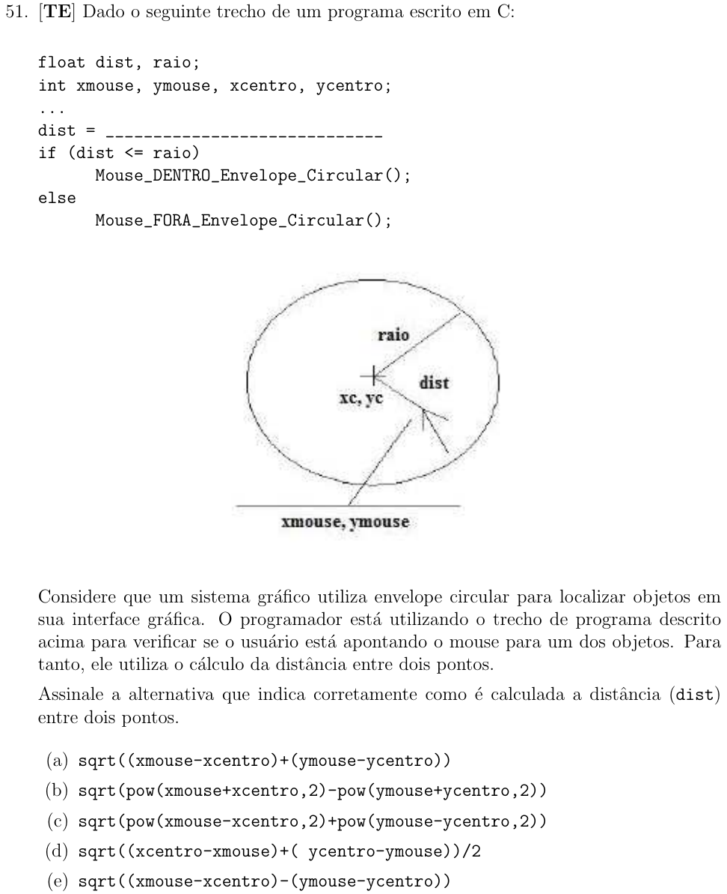
Resposta: C
Por quê: Distância euclidiana: sqrt((xm − xc)² + (ym − yc)²). Se for ≤ raio, o mouse está dentro do envelope circular.
P15 · POSCOMP 2008, questão 15
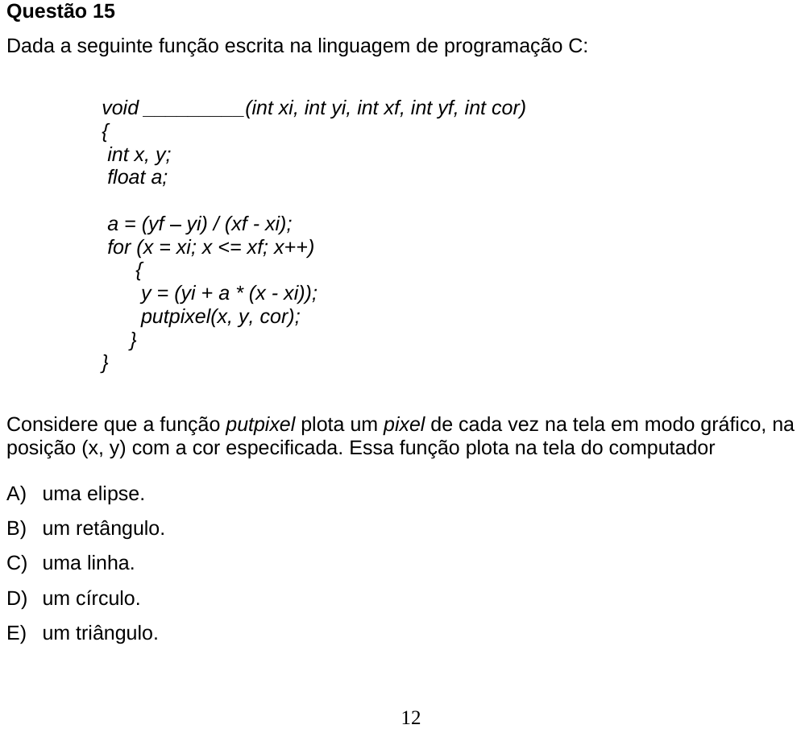
Resposta: C
Por quê: y = yi + a·(x − xi) com a = (yf − yi)/(xf − xi) é a equação da reta: para cada x acende um pixel, desenha uma linha.
P16 · POSCOMP 2009, questão 58
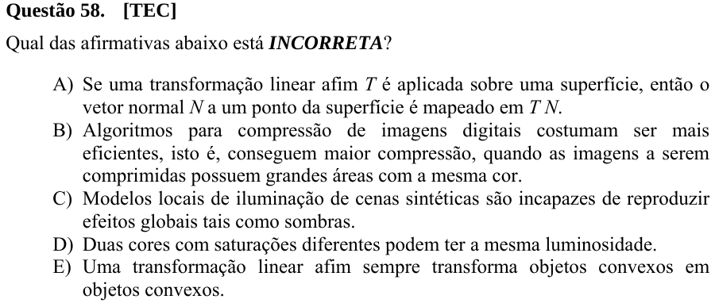
Resposta: A
Por quê: A incorreta é a A: normais não se transformam por T, e sim pela inversa transposta (T⁻¹)ᵀ (com escala não uniforme, T·N deixa de ser perpendicular à superfície). B, C, D e E são verdadeiras (transformação afim preserva convexidade).
P17 · POSCOMP 2009, questão 60
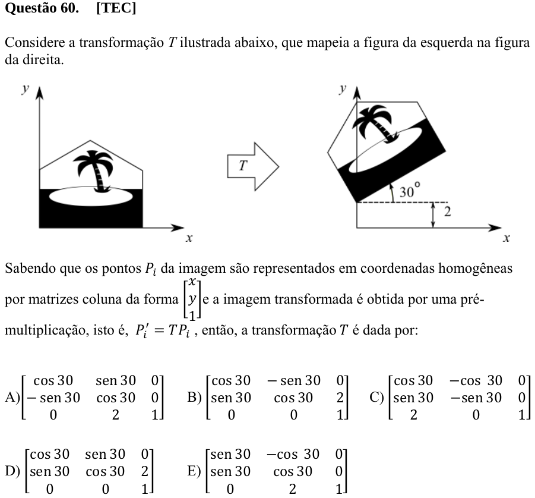
Resposta: B
Por quê: A figura gira 30° anti-horário e sobe 2. Com vetor-coluna e pré-multiplicação: T = T(0,2)·R(30°) = [[cos30, −sen30, 0], [sen30, cos30, 2], [0, 0, 1]] = B.
P18 · POSCOMP 2010, questão 51
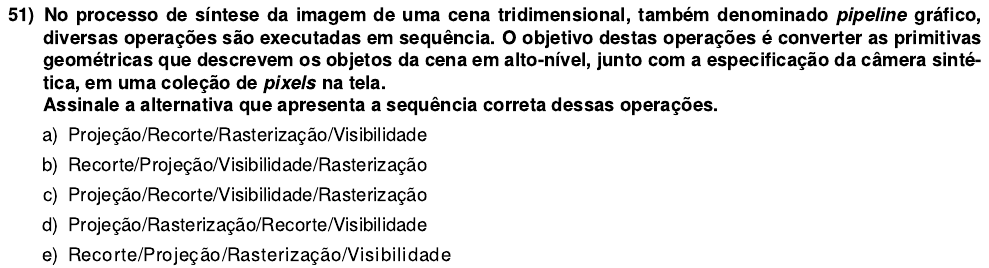
Resposta: E
Por quê: Recorte, projeção, rasterização e por último visibilidade (z-buffer pixel a pixel).
P19 · POSCOMP 2010, questão 52
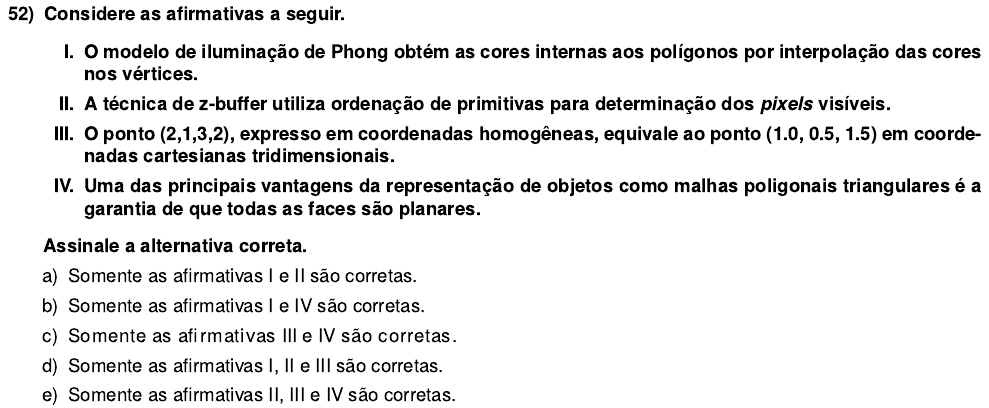
Resposta: C
Por quê: I falsa (Phong interpola normais; quem interpola cor é Gouraud). II falsa (z-buffer não ordena). III verdadeira ((2,1,3,2)/2 = (1; 0,5; 1,5)). IV verdadeira (triângulo é sempre planar).
P20 · POSCOMP 2010, questão 53
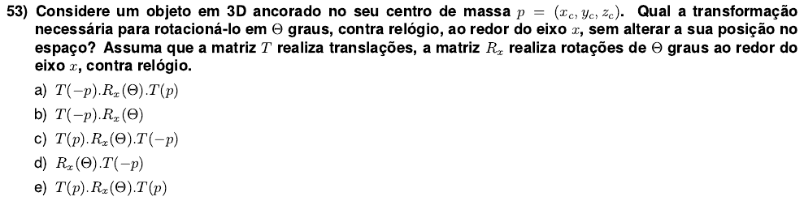
Resposta: C
Por quê: Leva p à origem, gira e devolve. Com vetor-coluna a primeira transformação fica à direita: T(p)·Rx(Θ)·T(−p).
P21 · POSCOMP 2010, questão 55
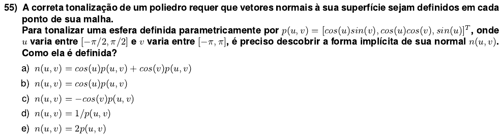
Resposta: B
Por quê: Na esfera unitária centrada na origem a normal tem a direção do próprio ponto. ∂p/∂u × ∂p/∂v = cos(u)·p(u,v).
P22 · POSCOMP 2011, questão 55
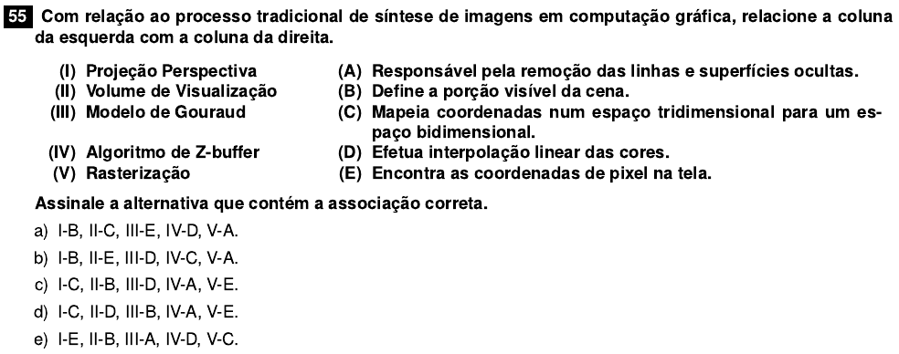
Resposta: C
Por quê: Projeção perspectiva leva 3D para 2D (I-C), volume de visualização define o visível (II-B), Gouraud interpola cores (III-D), z-buffer remove ocultas (IV-A), rasterização acha os pixels (V-E).
P23 · POSCOMP 2011, questão 58
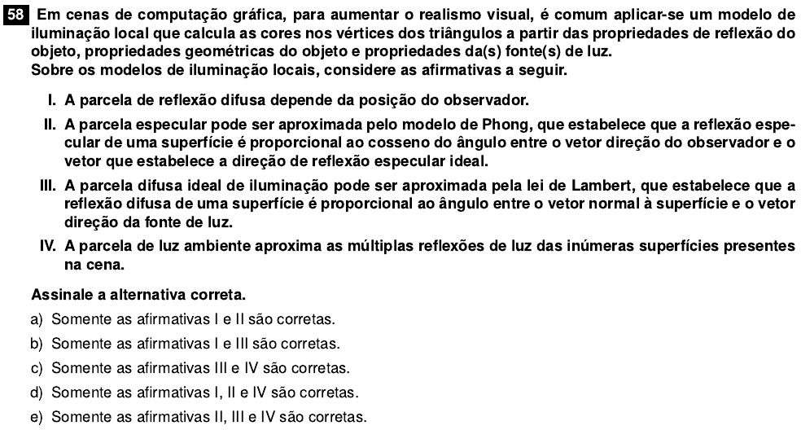
Resposta: E
Por quê: I falsa: a difusa não depende do observador. II verdadeira: especular de Phong com o cosseno entre observador e reflexão. III aceita como verdadeira (Lambert, ∝ cosseno entre N e L). IV verdadeira: ambiente aproxima as reflexões múltiplas.
P24 · POSCOMP 2012, questão 55
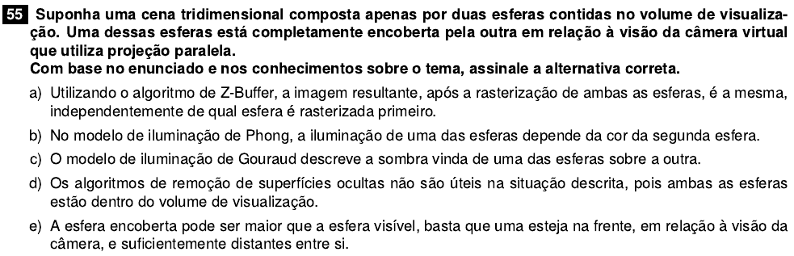
Resposta: A
Por quê: Z-buffer compara profundidade pixel a pixel, a ordem não importa. Na paralela a esfera escondida não pode ser maior; Gouraud e Phong são locais (sem sombra, sem depender da cor do outro objeto).
P25 · POSCOMP 2012, questão 58
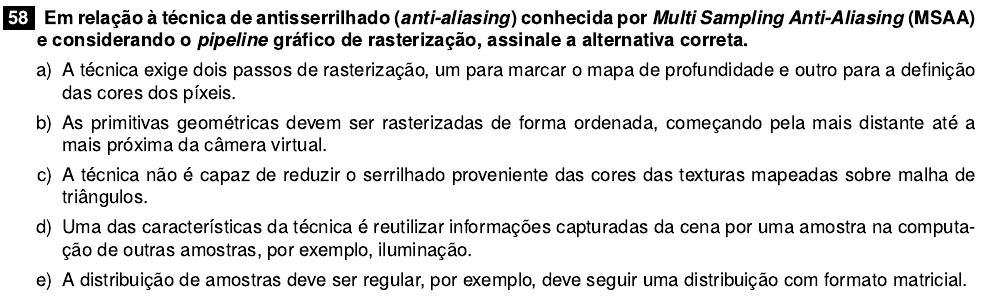
Resposta: D
Por quê: MSAA calcula o shading uma vez por pixel e reaproveita nas várias amostras de cobertura/profundidade. Rasteriza uma vez, não exige ordem nem grade regular.
P26 · POSCOMP 2013, questão 56
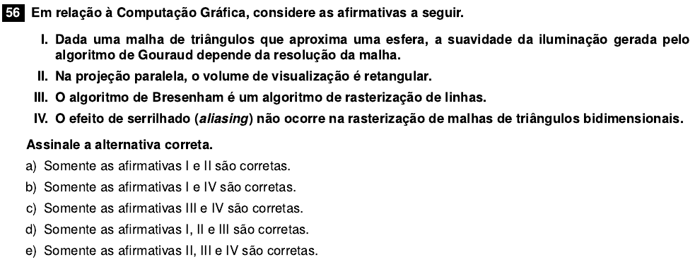
Resposta: D
Por quê: I verdadeira (Gouraud interpola cor dos vértices, malha mais fina = mais suave). II verdadeira (volume da paralela é retangular). III verdadeira (Bresenham rasteriza linhas). IV falsa (serrilhado aparece em qualquer rasterização).
P27 · POSCOMP 2013, questão 58
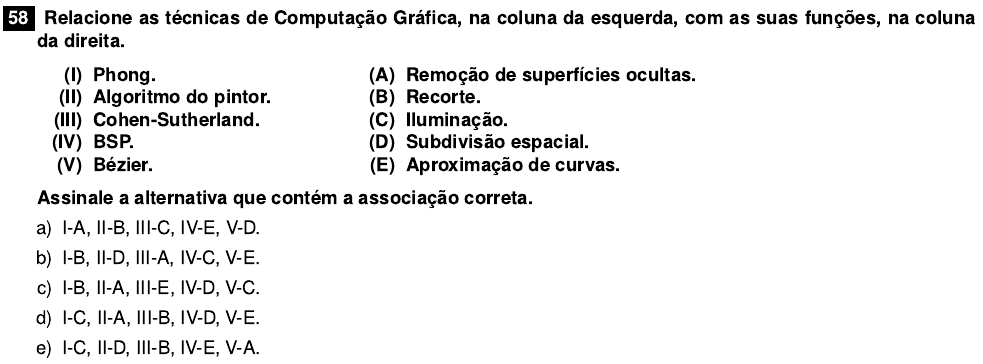
Resposta: D
Por quê: Phong → iluminação, pintor → superfícies ocultas, Cohen-Sutherland → recorte, BSP → subdivisão espacial, Bézier → aproximação de curvas: I-C, II-A, III-B, IV-D, V-E.
P28 · POSCOMP 2013, questão 60
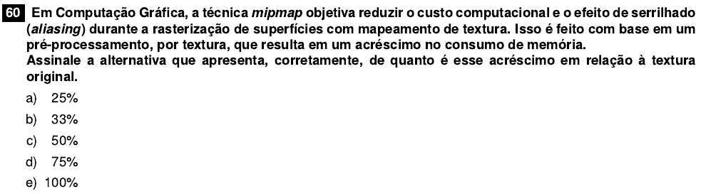
Resposta: B
Por quê: Cada nível do mipmap tem 1/4 dos pixels do anterior: 1/4 + 1/16 + ... = 1/3, cerca de 33% a mais.
P29 · POSCOMP 2014, questão 57
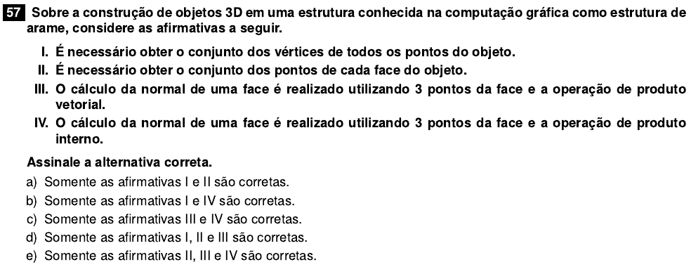
Resposta: D
Por quê: Arame: vértices (I) e pontos de cada face (II); normal por produto vetorial de duas arestas (III). Produto interno dá número, não vetor (IV falsa).
P30 · POSCOMP 2014, questão 58
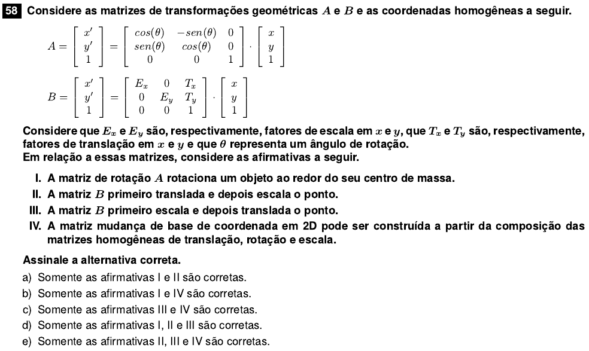
Resposta: C
Por quê: A gira em torno da origem (I falsa). B com vetor-coluna dá x' = Ex·x + Tx: escala e depois translada (III verdadeira, II falsa). IV verdadeira: mudança de base 2D é composição de translação, rotação e escala.
P31 · POSCOMP 2015, questão 57
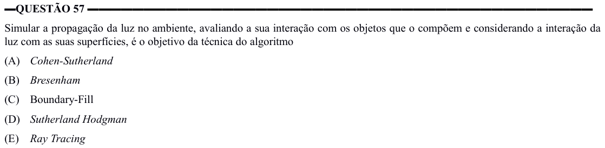
Resposta: E
Por quê: Simular a propagação da luz e sua interação com as superfícies é ray tracing. Bresenham traça retas, Cohen-Sutherland e Sutherland-Hodgman recortam, boundary-fill preenche.
P32 · POSCOMP 2015, questão 58
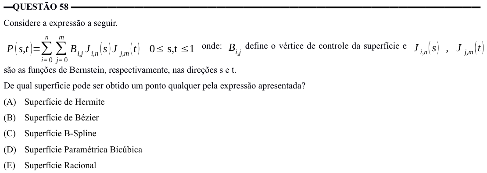
Resposta: B
Por quê: Soma dupla de pontos de controle pesados por funções de Bernstein em s e t é a superfície de Bézier.
P33 · POSCOMP 2015, questão 70
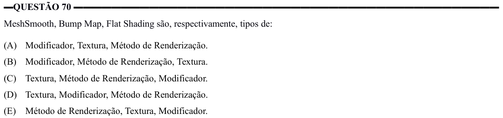
Resposta: A
Por quê: MeshSmooth é um modificador (de malha), bump map é um tipo de textura, flat shading é um método de renderização.
P34 · POSCOMP 2016, questão 57
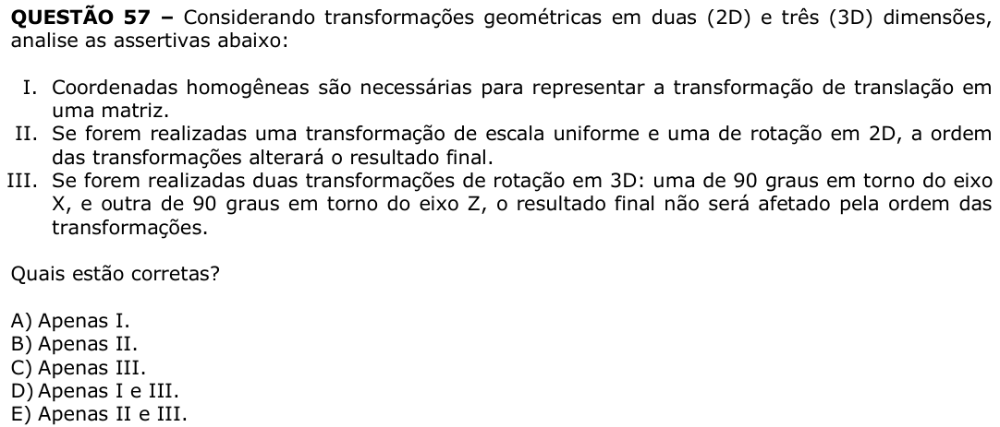
Resposta: A
Por quê: I verdadeira (translação só vira matriz em homogêneas). II falsa (escala uniforme comuta com rotação). III falsa (rotações em eixos diferentes não comutam).
P35 · POSCOMP 2016, questão 58
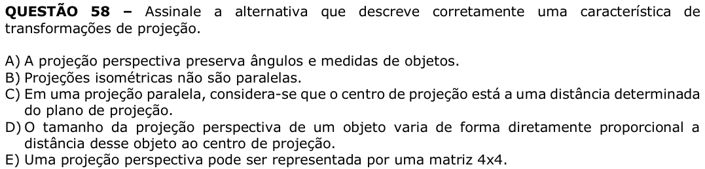
Resposta: E
Por quê: Perspectiva em homogêneas é uma 4×4. Ela não preserva ângulos e medidas, isométricas são paralelas, na paralela o centro de projeção está no infinito, e o tamanho projetado é inversamente proporcional à distância.
P36 · POSCOMP 2017, questão 57
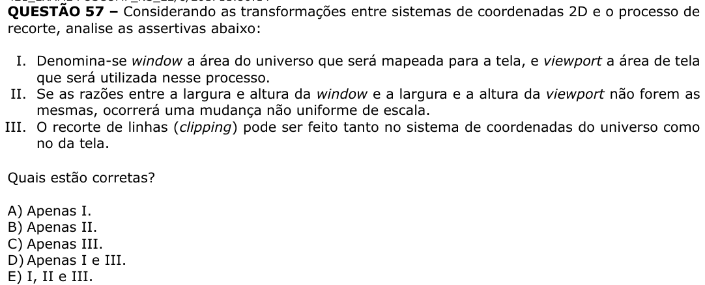
Resposta: E
Por quê: I é a definição de window e viewport. II: proporções diferentes dão escala não uniforme. III: o recorte pode ser feito no mundo ou na tela. Todas corretas.
P37 · POSCOMP 2017, questão 58
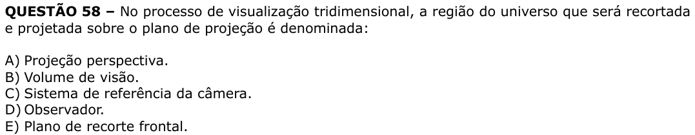
Resposta: B
Por quê: A região do mundo que será recortada e projetada é o volume de visão (frustum na perspectiva, paralelepípedo na paralela).
P38 · POSCOMP 2018, questão 57
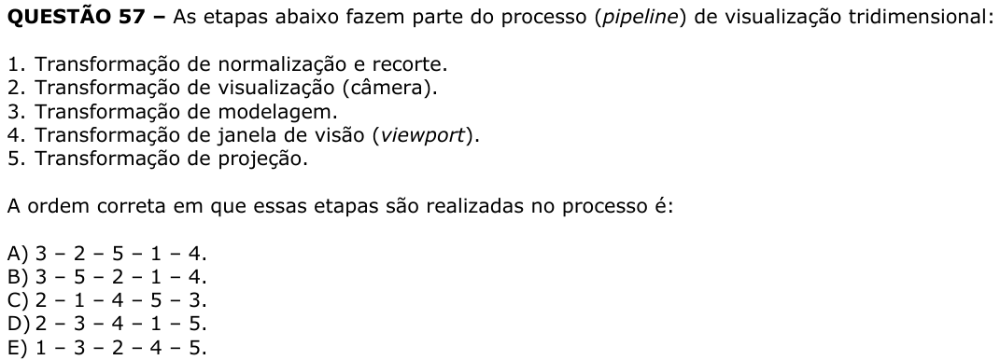
Resposta: A
Por quê: Modelagem (3), câmera (2), projeção (5), normalização e recorte (1), viewport (4): 3-2-5-1-4.
P39 · POSCOMP 2018, questão 58
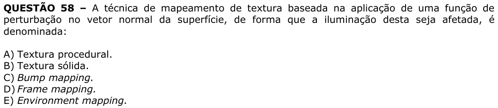
Resposta: C
Por quê: Perturbar a normal para afetar só a iluminação, sem mudar a geometria, é bump mapping.
P40 · POSCOMP 2019, questão 57
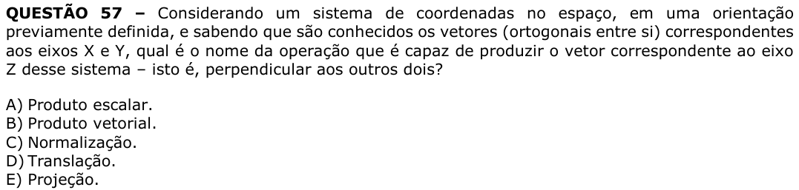
Resposta: B
Por quê: O produto vetorial X × Y dá o vetor perpendicular aos dois, o eixo Z.
P41 · POSCOMP 2019, questão 58
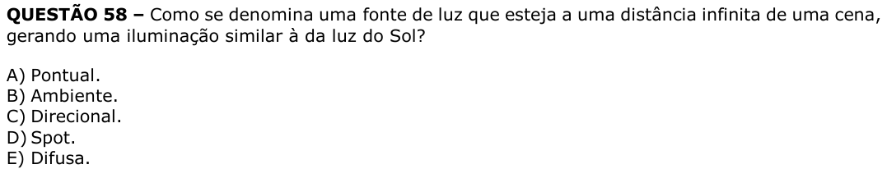
Resposta: C
Por quê: Luz no infinito, raios paralelos e mesma direção na cena toda, como o Sol: fonte direcional.
P42 · POSCOMP 2022, questão 57
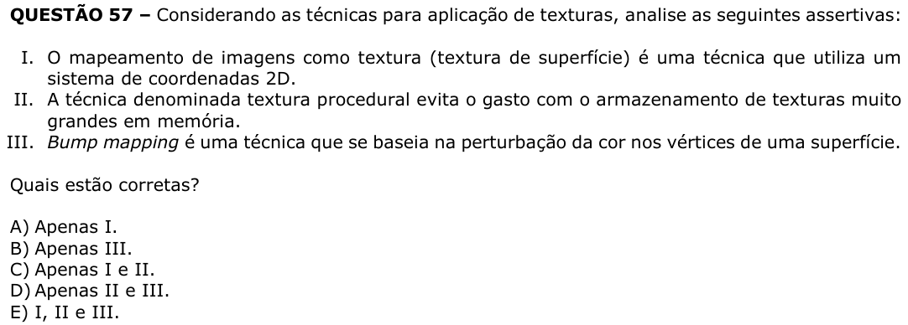
Resposta: C
Por quê: I verdadeira (textura de imagem usa coordenadas 2D (u,v)). II verdadeira (procedural gera a textura por função, sem guardar imagem grande). III falsa: bump mapping perturba a NORMAL, não a cor dos vértices.
P43 · POSCOMP 2022, questão 58
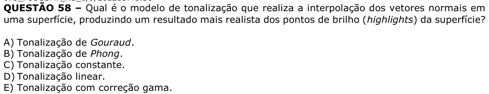
Resposta: B
Por quê: Interpolar as normais na superfície e calcular a iluminação por pixel é o Phong shading (tonalização de Phong); Gouraud interpola cores.
P44 · POSCOMP 2023, questão 56
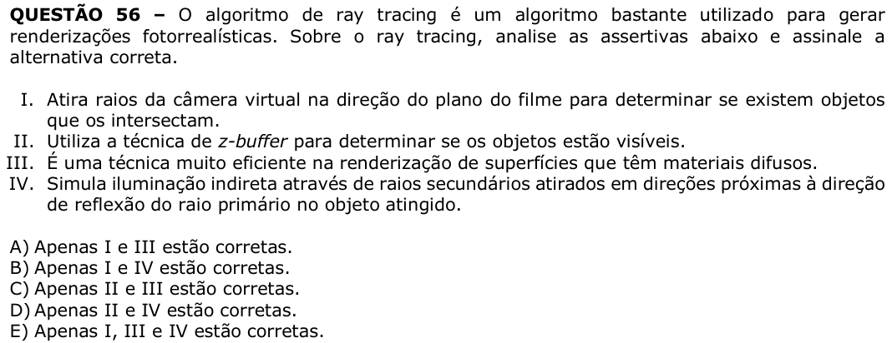
Resposta: B
Por quê: I verdadeira (raios saem da câmera). II falsa (ray tracing resolve visibilidade pela interseção mais próxima, sem z-buffer). III falsa (é ineficiente para materiais difusos, precisaria de muitos raios). IV verdadeira (raios secundários na direção de reflexão).
P45 · POSCOMP 2023, questão 57
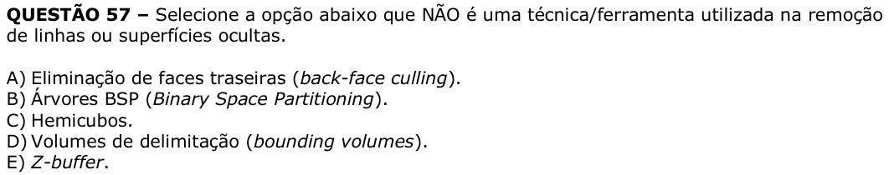
Resposta: C
Por quê: Backface culling, BSP, volumes de delimitação e z-buffer servem para remover/acelerar superfícies ocultas. Hemicubo é da radiosidade (fator de forma), não de remoção de ocultas.
P46 · POSCOMP 2024, questão 56
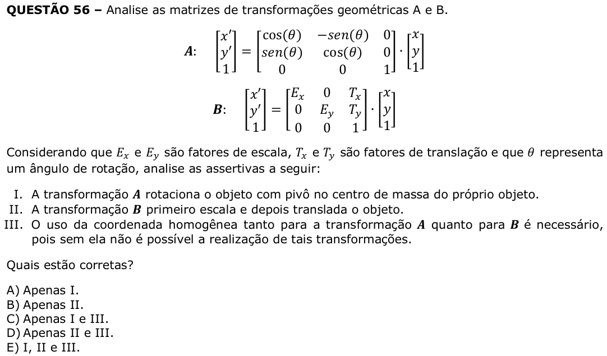
Resposta: B
Por quê: I falsa: A gira em torno da origem, não do centro de massa. II verdadeira: com vetor-coluna B faz x' = Ex·x + Tx (escala, depois translada). III falsa: para a rotação A (linear) homogêneas não são necessárias; só a translação de B precisa.
P47 · POSCOMP 2024, questão 57
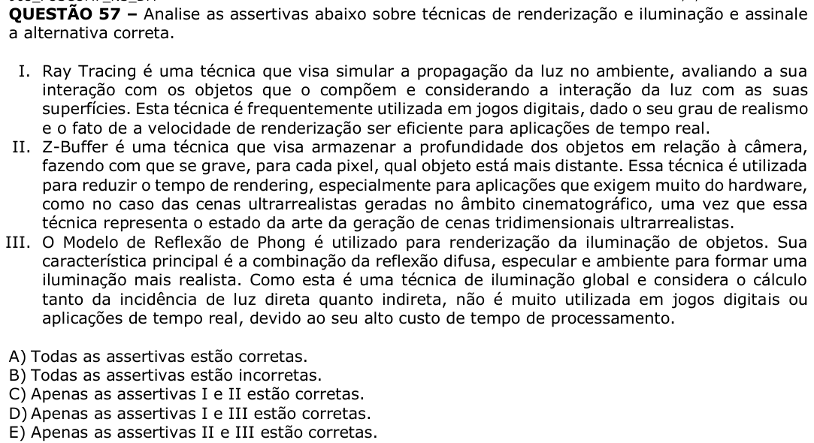
Resposta: B
Por quê: Todas incorretas: I (ray tracing é caro, não é o padrão de tempo real em jogos), II (z-buffer guarda o mais PRÓXIMO, e é técnica de rasterização em tempo real, não o estado da arte cinematográfico), III (Phong é modelo local, não iluminação global).
P48 · POSCOMP 2025, questão 56
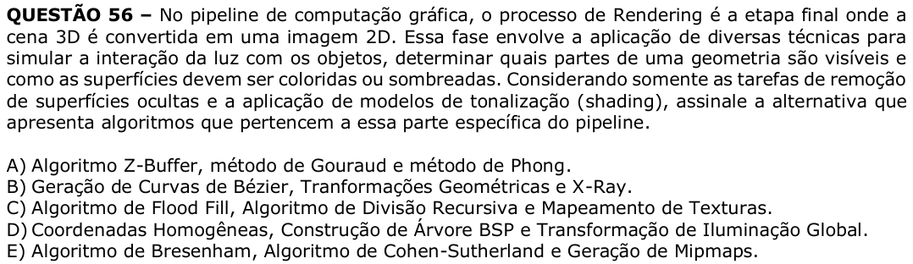
Resposta: A
Por quê: Remoção de superfícies ocultas (z-buffer) e tonalização (Gouraud, Phong) estão na A. As outras misturam curvas, transformações, preenchimento, recorte e mipmaps.
P49 · POSCOMP 2025, questão 57
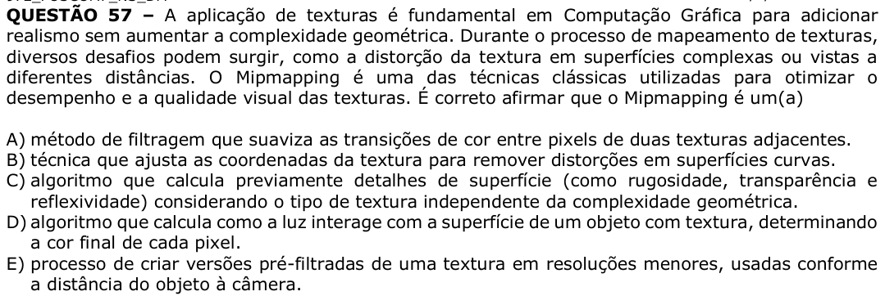
Resposta: E
Por quê: Mipmap = versões pré-filtradas da textura em resoluções menores, escolhidas conforme a distância à câmera.
P50 · POSCOMP 2026, questão 56
Resposta: A
Por quê: Rotação de 30° anti-horária em torno de P = (2,2), vetor-coluna: T(P)·R(30°)·T(−P). O bloco é [[0,87, −0,5], [0,5, 0,87]] e a translação é P − R·P = (2 − 0,74; 2 − 2,74) = (1,26; −0,74): alternativa A.
P51 · POSCOMP 2026, questão 57
Resposta: B
Por quê: I falsa (inverte: o flat fica facetado em malha pouco tesselada). II falsa (Gouraud interpola CORES/intensidades, não normais). III verdadeira (Phong interpola normais e calcula a iluminação por pixel, melhor brilho especular e mais caro).
Matemática usada em CG (vetores, transformações)
P52 · POSCOMP 2004, questão 4
Resposta: A
Por quê: A matriz é (1/5)·[[−4, 3], [3, 4]]: colunas unitárias e ortogonais, simétrica e com determinante −1, então é uma reflexão. A reta fixa sai de (A − I)v = 0: −9x + 3y = 0, ou seja y = 3x. Não é translação (T(0,0) = (0,0)) nem escala.
P53 · POSCOMP 2005, questão 4
Resposta: C
Por quê: Com vetor-coluna, A·(0,1,0) é a 2ª coluna de A = (3,1,2). As outras não batem: A·(1,0,0) = (1,2,3), A·(0,0,1) = (2,1,3), A·(1,1,0) = (4,3,5), A·(1,0,1) = (3,3,6).
P54 · POSCOMP 2011, questão 6
Resposta: A
Por quê: Normal = produto vetorial de duas arestas: AB = (2, 0, −2), AC = (0, −1, −2), AB × AC = (0·(−2) − (−2)(−1), (−2)·0 − 2·(−2), 2·(−1) − 0·0) = (−2, 4, −2).
P55 · POSCOMP 2012, questão 5
Resposta: D
Por quê: (4,2) foi para (−2,4): (x, y) → (−y, x) é a rotação de 90° anti-horária, ou seja α = π/2. Confere: o produto escalar (4,2)·(−2,4) = 0 e os módulos são iguais.
P56 · POSCOMP 2013, questão 6
Resposta: D
Por quê: O produto vetorial é distributivo em relação à soma. Não é comutativo (u × v = −v × u), não é associativo, não vale cancelamento, e é nulo também para vetores paralelos não nulos.
P57 · POSCOMP 2014, questão 8
Resposta: E
Por quê: Os vetores do plano são (0,3,0) e (4,0,1). I falsa: o produto vetorial deles é (3, 0, −12), não zero. II verdadeira (não são paralelos). III aceita pelo gabarito (é a equação vetorial/paramétrica do plano). IV verdadeira: (3, 0, −12) é justamente o produto vetorial, logo normal ao plano.
P58 · POSCOMP 2018, questão 4
Resposta: E
Por quê: u·v = 5·(−3) + 4·2 = −7. cos θ = −7/(√41·√13) ≈ −0,303, então θ ≈ 107,6°.
P59 · POSCOMP 2022, questão 3
Resposta: A
Por quê: u·v = 3 + 2 − 2 = 3. u × v = ((−1)(−1) − 2(−2), 2·1 − 3(−1), 3(−2) − (−1)·1) = (5, 5, −5).
Processamento de Imagens
P60 · POSCOMP 2002, questão 51
Resposta: C
P61 · POSCOMP 2002, questão 52
Resposta: B
P62 · POSCOMP 2003, questão 61
Resposta: anulada pela SBC
P63 · POSCOMP 2004, questão 56
Resposta: D
P64 · POSCOMP 2004, questão 58
Resposta: E
P65 · POSCOMP 2005, questão 59
Resposta: B
P66 · POSCOMP 2005, questão 60
Resposta: D
P67 · POSCOMP 2006, questão 47
Resposta: E
P68 · POSCOMP 2006, questão 48
Resposta: B
P69 · POSCOMP 2006, questão 51
Resposta: C
P70 · POSCOMP 2007, questão 61
Resposta: D
P71 · POSCOMP 2007, questão 62
Resposta: C
P72 · POSCOMP 2007, questão 63
Resposta: A
P73 · POSCOMP 2008, questão 3
Resposta: B
P74 · POSCOMP 2008, questão 4
Resposta: B
P75 · POSCOMP 2009, questão 59
Resposta: A
P76 · POSCOMP 2010, questão 54
Resposta: A
P77 · POSCOMP 2011, questão 62
Resposta: anulada pela SBC
P78 · POSCOMP 2011, questão 66
Resposta: A
P79 · POSCOMP 2012, questão 57
Resposta: B
P80 · POSCOMP 2012, questão 59
Resposta: A
P81 · POSCOMP 2013, questão 57
Resposta: B
P82 · POSCOMP 2013, questão 59
Resposta: E
P83 · POSCOMP 2014, questão 59
Resposta: E
P84 · POSCOMP 2014, questão 61
Resposta: D
P85 · POSCOMP 2015, questão 59
Resposta: D
P86 · POSCOMP 2015, questão 61
Resposta: anulada pela SBC
P87 · POSCOMP 2016, questão 59
Resposta: C
P88 · POSCOMP 2016, questão 61
Resposta: D
P89 · POSCOMP 2017, questão 59
Resposta: D
P90 · POSCOMP 2017, questão 61
Resposta: B
P91 · POSCOMP 2018, questão 59
Resposta: B
P92 · POSCOMP 2018, questão 61
Resposta: A
P93 · POSCOMP 2019, questão 59
Resposta: E
P94 · POSCOMP 2019, questão 61
Resposta: B
P95 · POSCOMP 2022, questão 59
Resposta: D
P96 · POSCOMP 2022, questão 61
Resposta: E
P97 · POSCOMP 2023, questão 63
Resposta: C
P98 · POSCOMP 2023, questão 64
Resposta: D
P99 · POSCOMP 2024, questão 63
Resposta: D
P100 · POSCOMP 2024, questão 64
Resposta: B
P101 · POSCOMP 2025, questão 40
Resposta: D
P102 · POSCOMP 2025, questão 63
Resposta: A
P103 · POSCOMP 2025, questão 64
Resposta: C
P104 · POSCOMP 2026, questão 63
Resposta: C
P105 · POSCOMP 2026, questão 64
Resposta: C